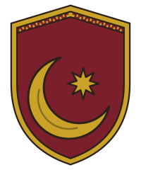

⚔ Attacker
Hungary
6LeviesJohn Hunyadi, Voivode of Transylvania, war-captain of the Regnum

Round 9 · Anno Domini 1448 · The host of Hungary comes against the Porte across the Sitnica, and the plain remembers.
⚔ Attacker
John Hunyadi, Voivode of Transylvania, war-captain of the Regnum

⛨ Defender
Kurt Agha, Agha of the Janissaries
The attacker strikes thrice; the camp walls turn two blows away — one hit stands.
The defender strikes once — one hit stands.
A die of five or six strikes home. Each hit that stands fells one levy.
“They fled just badly enough to be believed.”
Effect: before hits are dealt, withdraw your host in good order to an adjacent province you control; the battle ends.
“The sea itself burned, and water would not put it out.”
Effect: win one fleet battle outright, before any dice are cast; then discard this card.
Withheld — no fleet stands upon this field; the sea is far from Kosovo.
“His price was forty ducats and a fast horse. The wall's price was higher.”
Effect: cancel the wall bonus for one round of a siege you are pressing.
Withheld — this is a pitched battle, not a siege; there is no gate here to buy.
Spec apparatus: both variants shown; the table sees only one.
Variant A · Victory
Variant B · Defeat
../../art/map/board.svg) dims under the standard modal scrim; the battle
modal centers over it. The scrim does not dismiss on click — a battle, once
joined, resolves. Opening plays sword_clash, then battle_distant
loops; battle_drums overlays the music bed with campaign_ambient
ducked to 30 of 100 (README §4). The vignette in the modal head reuses the event
illustration ../../art/illustrations/events/second-kosovo.svg.../../art/crests/), faction name with data-faction
swatch (colorblind hatches per mockups.css §16), levy count as a resource chip
(../../art/icons/army.svg), and the commander line. Role is carried by
label pill and dice-rim color and position — never color alone.dice_roll; dice tumble at most 400ms and settle instantly
under prefers-reduced-motion. The middle strip is the reckoning: hits
weighed against modifiers, then the standing total per side as tally pills.lore/tactics/cards.md): name, one line of flavor, effect. The playable
card carries the gold rim and its play button; withheld cards dim to opacity 0.5 and
state their reason in voice — a dimmed card must give its reason on hover and
tap (README §1). Playing a card plays card_flip. Final card faces render
on the frame ../../art/cards/tactic-card.svg.../../art/icons/prestige.svg, horn_fanfare) and defeat
(crimson ground, broken-banner glyph ⚑, defeat_drum). Both grounds carry
the gold rule and a glyph — color is never the only channel. Closing the banner
returns to the board and releases the battle music overlay.